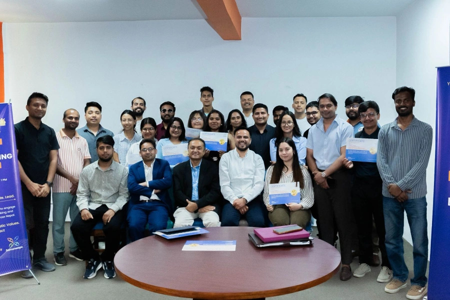
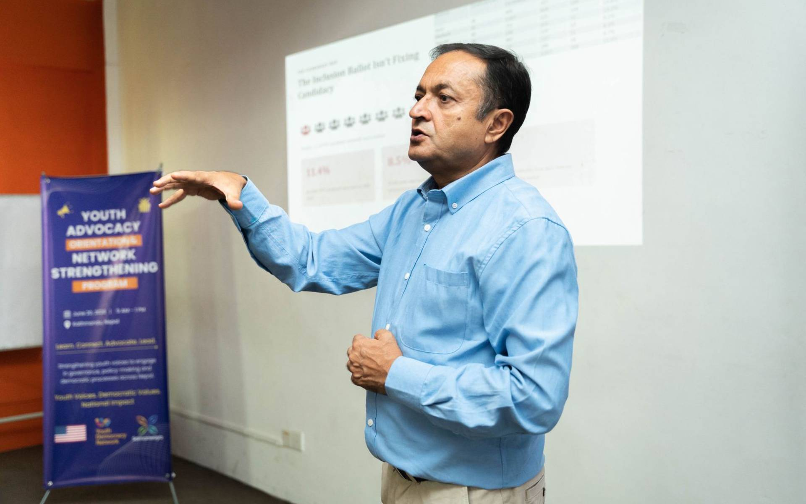
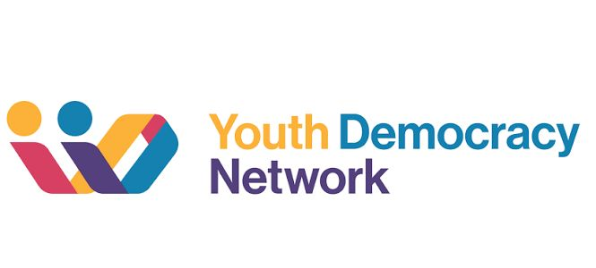
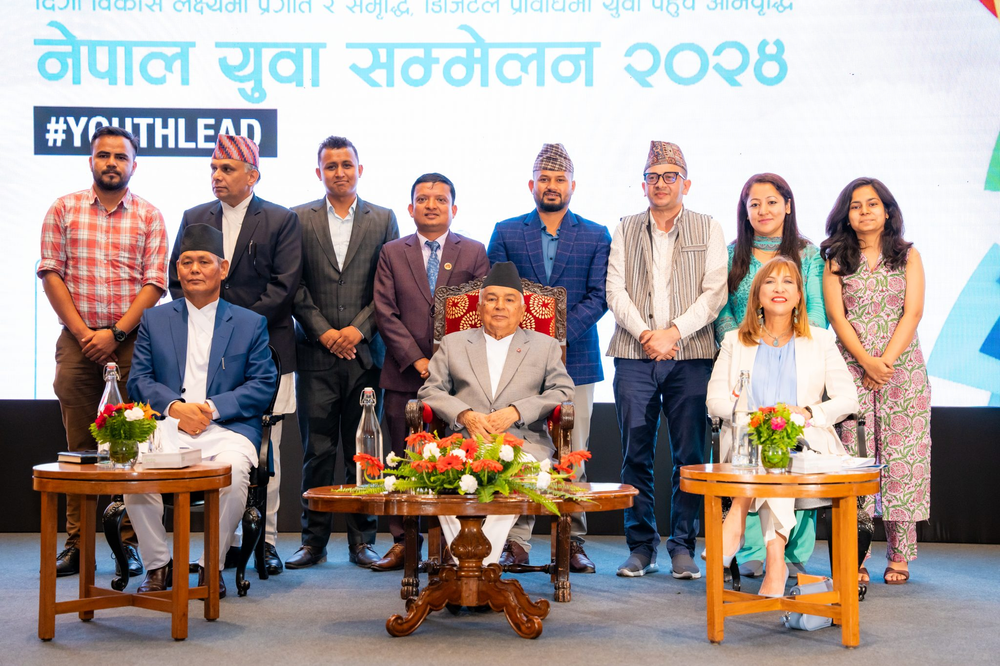

Incubate LOCAL
Open-source civic toolkits, digital literacy, and leadership curriculums delivered to municipal youth networks.
Samanwaya Nepal is a youth-centered institution where young citizens — across every geography, ethnicity, gender, and background — converge to lead the civic systems that shape their lives.

“Samanwaya” means coordination, systemic harmony, and cross-sectoral collaboration — the deliberate art of unifying diverse forces toward a shared, constructive purpose.
We move away from top-down development. Our four-tier framework carries youth-led ideas from local communities all the way to international policy arenas.
Open-source civic toolkits, digital literacy, and leadership curriculums delivered to municipal youth networks.
Secure assembly spaces where citizens, local government, and media collaborate on structural challenges.
Translating grassroots data and research into policy white papers that influence legal and governance reform.
Connecting Nepal's youth-led innovations to global platforms, coalitions, and cross-border knowledge exchange.

“Nepal's democratic future depends on the active leadership of its young people — not as beneficiaries, but as co-designers of the systems they inherit.”
A youth expert, policy advocate, and drafting member of Nepal's National Youth Policy 2025. He has reached thousands of young people through leadership and civic-participation programs across Nepal and beyond.
Read his story →Every program drives measurable progress across five priority Global Goals.
Join a national network of young leaders learning to advocate, deliberate, and lead — right from your own community.
Become a youth participant →
Young leaders from across Nepal convened in Kathmandu to strengthen their advocacy skills and build networks for democratic engagement.
Read more →A comprehensive orientation and network strengthening program empowering youth advocates with tools for effective civic participation.
Read more →
Follow our latest activities, success stories, and community engagement initiatives on social media.
View post →